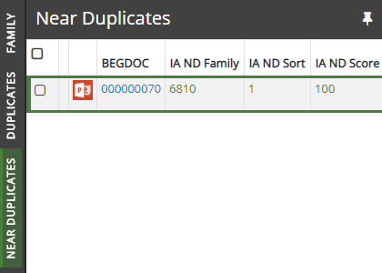

This
The metadata of the items identified as part of a near-duplicate group will be updated with a group ID to identify the near-duplicate group to which the items belong. See the Near Duplicates panel.

For
The documents are grouped by IA ND Family.
The documents are sorted by IA ND Sort.
The selected fields are BEGDOC, IA ND Family, IA ND Sort, IA ND Words, and IA ND Score.
Related Topics